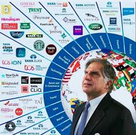

Global Visionary
Led Tata Group’s global expansion: Tetley (2000), Corus Steel (2007), and Jaguar Land Rover (2008). Transformed a Indian conglomerate into an international powerhouse.
In loving memory
Industrialist, philanthropist, and the chairman emeritus who transformed the Tata Group into a global powerhouse with humility, ethics, and visionary compassion.
Honor his journeyLegend of Indian Industry
Ratan Naval Tata (28 December 1937 – 9 October 2024) was an Indian industrialist, philanthropist, and former chairman of Tata Sons. He served as chairman from 1991 to 2012 and again as interim chairman from 2016 to 2017. Under his visionary leadership, Tata Group's revenues grew multifold, transforming the conglomerate into a global force with landmark acquisitions: Tetley (2000), Corus Steel (2007), and Jaguar Land Rover (2008). Educated at Cornell University with a Bachelor of Science in Architecture (1962) and later completing the Advanced Management Program at Harvard Business School, Ratan Tata blended technical insight with profound empathy. Beyond business, he ensured that 66% of Tata Sons is held by philanthropic trusts, channeling billions toward education, healthcare, rural development, and scientific research. He was honored with the Padma Bhushan (2000) and Padma Vibhushan (2008), India’s highest civilian awards.
Life of service & leadership
of Tata Sons owned by charitable trusts
India’s 2nd highest civilian honor
Led Tata Group’s global expansion: Tetley (2000), Corus Steel (2007), and Jaguar Land Rover (2008). Transformed a Indian conglomerate into an international powerhouse.
Inspired by a family riding a scooter in Mumbai, he envisioned the Tata Nano — the world’s most affordable car — embodying engineering innovation with deep compassion.
Through Tata Trusts, he expanded cancer care, scientific research, and rural upliftment. Donated over $1 billion+ to various causes, including Cornell University and the Indian Institute of Science.
Recipient of Padma Bhushan (2000), Padma Vibhushan (2008), Honorary KBE (2009), Grand Cordon of the Order of the Rising Sun (2012), and the Legion of Honour (2016).
Life & Milestones
Born on 28 December in Bombay (now Mumbai) to Naval and Soonoo Tata.
Earns Bachelor of Science in Architecture from Cornell University.
Joins Tata Group as a director of Tata Industries.
Becomes chairman of Tata Sons, succeeding J.R.D. Tata. Initiates bold restructuring.
Launches Tata Indica — India’s first fully indigenous passenger car.
Tata Tea acquires Tetley Group, marking first major global acquisition.
Tata Motors unveils Tata Nano; Tata acquires Jaguar Land Rover. Receives Padma Vibhushan.
Retires as chairman of Tata Sons, dedicates full time to Tata Trusts.
Serves as interim chairman of Tata Sons during leadership transition.
Passes away peacefully on 9 October in Mumbai, leaving behind an immortal legacy of ethics, innovation, and humility.
“I don't believe in taking right decisions. I take decisions and then make them right.”
Visual Journey




“Ups and downs in life are very important to keep us going, because a straight line even in an ECG means we are not alive.”
Ratan Tata invested in more than 30 startups, championed animal welfare, funded cancer research, and lived with profound humility. Even after his passing, his ethos of ethical capitalism, empathy, and “giving back to society” remains a beacon for millions. The nation observed a state funeral, and his final journey was a testament to a leader who never separated success from service.
📜 Honorary distinctions: Knight Commander of the Order of the British Empire (KBE), Grand Cordon of the Order of the Rising Sun (Japan), and France’s highest civilian award, the Légion d’Honneur.